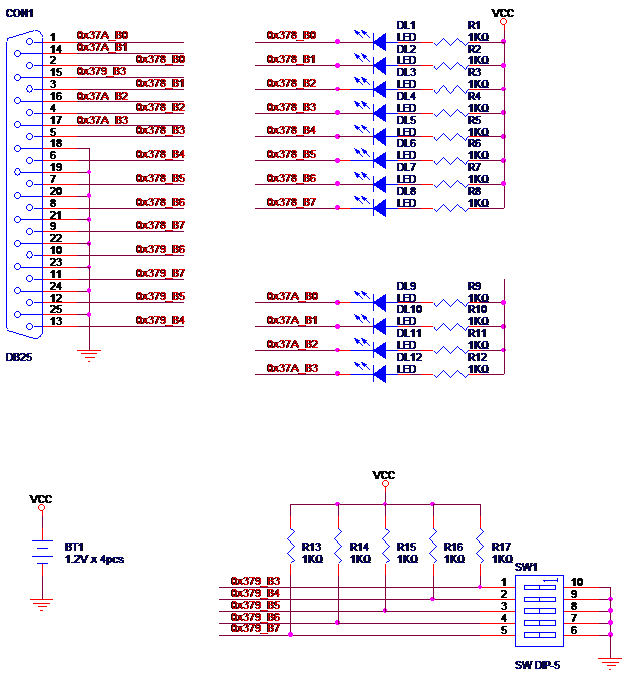
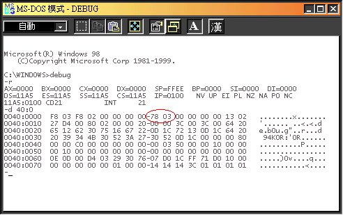
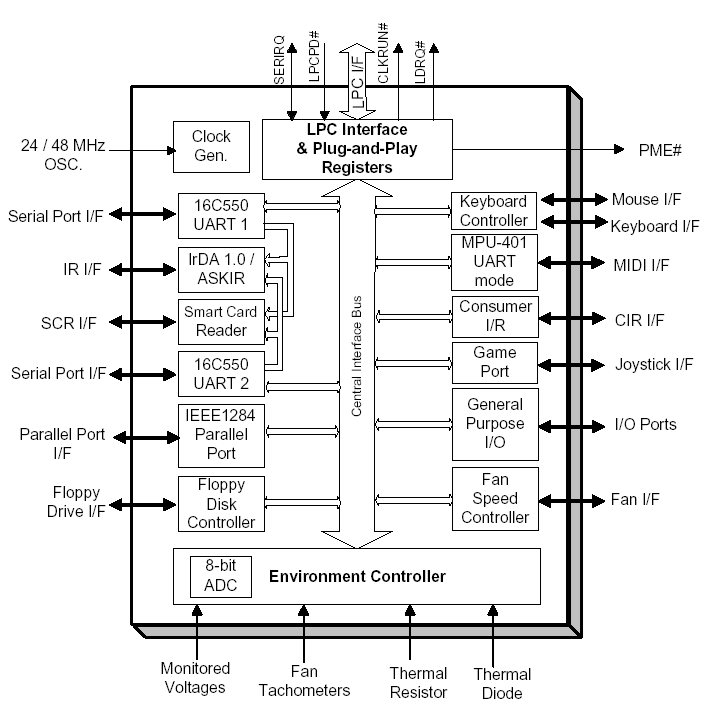
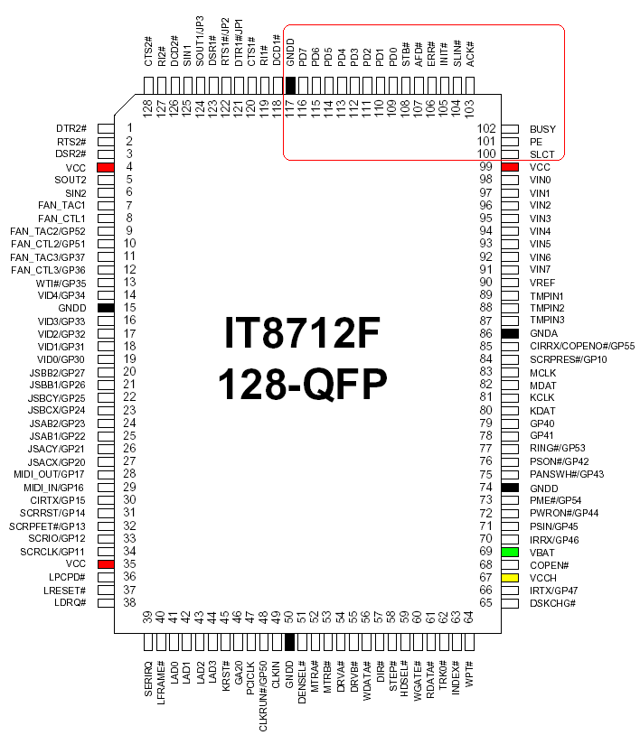
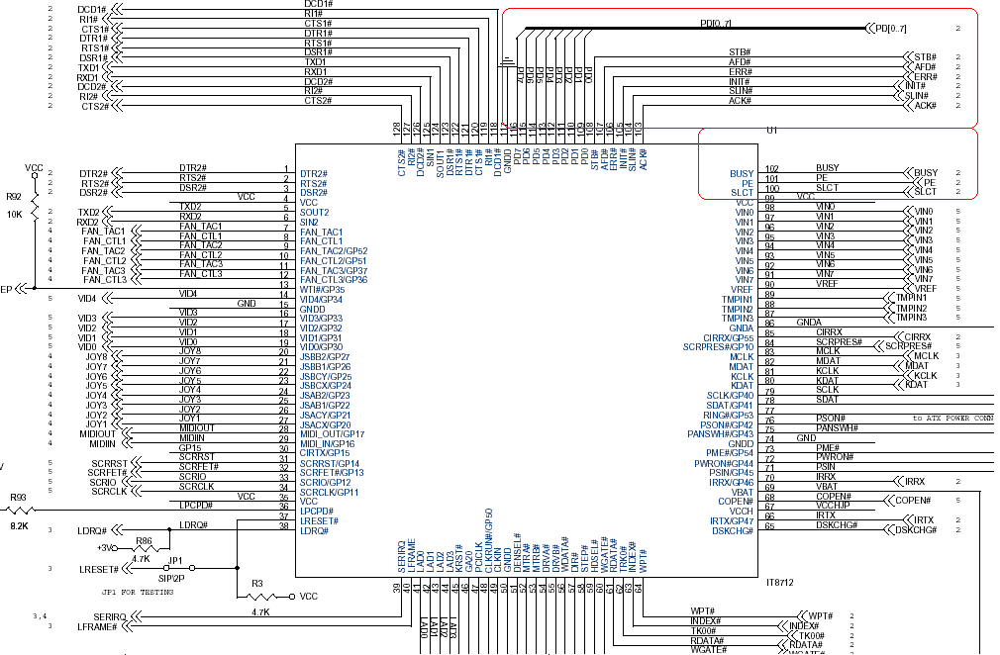
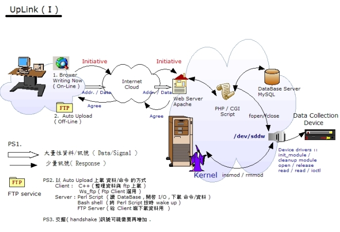

Under Construction now ...
Man-Machine Interfaces
Parallel Port Device and Linux Device Driver
$author: Jin-Wen (Ed) Lai, s9360511[at]ntut[dot]org[dot]tw
$date: May. 2003
$revised: Mar. 2018
$keywords: man, machine, interface
An exercise of an implementation of Linux Device Driver.
Content
- Concept
- Requirements
- Hardware
- Software
- Programming
- Stand-alone Edition
- Online Edition
- Application
- Demonstration
Concept
- 驅動電腦並列埠上的 LED.
Requirements
Hardware
- PC (w/. Parallel Port)
Software
- RedHat Linux
- Linux GCC
Hardware
-
Schematic
 -
Breadboard
Background
IO Port Address in PC
| I/O埠 | LPT1 | LPT2 | Monochrome Display Adapter |
|---|---|---|---|
| 資料輸出埠 | 0x378 | 0x278 | 0x3BC |
| 狀態輸入埠 | 0x379 | 0x279 | 0x3BD |
| 控制輸出埠 | 0x37A | 0x27A | 0x3BE |
BIOS 數據區
- 當BIOS尋找到平行埠後, 除會標明LPT名稱外, 也會在BIOS數據區（Data Area）內儲存BIOS規劃給平行埠的位址.
- BIOS數據區是一個記憶體區域, 其內部儲存著記錄PC所有裝置的映射表(mapping table).
- 因此, 若無法利用作業系統獲得平行埠的
378或278位址, 那就必須透過BIOS的映射表來取得.

Super IO
- 目前 PC 上的
Parallel port, 幾乎有已整合到Super IO裡面. - 所以我們可以參考
Super IO的規格. - IT8712F 的方塊圖
 - IT8712F 腳位定義表格 (P.100~P117)
| Pin | Signal | Pin | Signal | Pin | Signal | Pin | Signal |
|---|---|---|---|---|---|---|---|
| 1 | DTR2# | 33 | SCRIO/GP12 | 65 | DSKCHG# | 97 | VIN1 |
| 2 | RTS2# | 34 | SCRCLK/GP11 | 66 | IRTX/GP47 | 98 | VIN0 |
| 3 | DSR2# | 35 | VCC | 67 | VCCH | 99 | VCC |
| 4 | VCC | 36 | LPCPD# | 68 | COPEN# | 100 | SLCT |
| 5 | SOUT2 | 37 | LRESET# | 69 VBAT | 101 | PE | |
| 6 | SIN2 | 38 | LDRQ# | 70 | IRRX/GP46 | 102 | BUSY |
| 7 | FAN_TAC1 | 39 | SERIRQ | 71 | PSIN/GP45 | 103 | ACK# |
| 8 | FAN_CTL1 | 40 | LFRAME# | 72 PWRON#/GP44 | 104 | SLIN# | |
| 9 | FAN_TAC2/GP52 | 41 | LAD0 | 73 | PME#/GP54 | 105 | INIT# |
| 10 | FAN_CTL2/GP51 | 42 | LAD1 | 74 | GNDD | 106 | ERR# |
| 11 | FAN_TAC3/GP37 | 43 | LAD2 | 75 | PANSWH#/GP43 | 107 | AFD# |
| 12 | FAN_CTL3/GP36 | 44 | LAD3 | 76 | PSON#/GP42 | 108 | STB# |
| 13 | WTI#/GP35 | 45 | KRST# | 77 | RING#/GP53 | 109 | PD0 |
| 14 | VID4/GP34 | 46 | GA20 | 78 | GP41 | 110 | PD1 |
| 15 | GNDD | 47 | PCICLK | 79 | GP40 | 111 | PD2 |
| 16 | VID3/GP33 | 48 | CLKRUN#/GP50 | 80 | KDAT | 112 | PD3 |
| 17 | VID2/GP32 | 49 | CLKIN | 81 | KCLK | 113 | PD4 |
| 18 | VID1/GP31 | 50 | GNDD | 82 | MDAT | 114 | PD5 |
| 19 | VID0/GP30 | 51 | DENSEL# | 83 | MCLK | 115 | PD6 |
| 20 | JSBB2/GP27 | 52 | MTRA# | 84 | SCRPRES#/GP10 | 116 | PD7 |
| 21 | JSBB1/GP26 | 53 | MTRB# | 85 | CIRRX/COPENO#/GP55 | 117 | GNDD |
| 22 | JSBCY/GP25 | 54 | DRVA# | 86 | GNDA | 118 | DCD1# |
| 23 | JSBCX/GP24 | 55 | DRVB# | 87 | TMPIN3 | 119 | RI1# |
| 24 | JSAB2/GP23 | 56 | WDATA# | 88 | TMPIN2 | 120 | CTS1# |
| 25 | JSAB1/GP22 | 57 | DIR# | 89 | TMPIN1 | 121 | DTR1#/JP1 |
| 26 | JSACY/GP21 | 58 | STEP# | 90 | VREF | 122 | RTS1#/JP2 |
| 27 | JSACX/GP20 | 59 | HDSEL# | 91 | VIN7 | 123 | DSR1# |
| 28 | MIDI_OUT/GP17 | 60 | WGATE# | 92 | VIN6 | 124 | SOUT1/JP3 |
| 29 | MIDI_IN/GP16 | 61 | RDATA# | 93 | VIN5 | 125 | SIN1 |
| 30 | CIRTX/GP15 | 62 | TRK0# | 94 | VIN4 | 126 | DCD2# |
| 31 | SCRRST/GP14 | 63 | INDEX# | 95 | VIN3 | 127 | RI2# |
| 32 | SCRPFET#/GP13 | 64 | WPT# | 96 | VIN2 | 128 | CTS2# |
- IT8712F 並列埠腳位定義描述
| Pin(s) No. | Symbol | I/O | Power | Description |
|---|---|---|---|---|
| 100 | SLCT | DI | VCC | Printer Select. This signal goes high when the line printer has been selected. |
| 101 | PE | DI | VCC | Printer Paper End. This signal is set high by the printer when it runs out of paper. |
| 102 | BUSY | DI | VCC | Printer Busy. This signal goes high when the line printer has a local operation in progress and cannot accept data. |
| 103 | ACK# | DI | VCC | Printer Acknowledge #. This signal goes low to indicate that the printer has already received a character and is ready to accept another. |
| 104 | SLIN# | DIO24 | VCC | Printer Select Input #. When low, the printer is selected. This signal is derived from the complement of bit 3 of the printer control register. |
| 105 | INIT# | DIO24 | VCC | Printer Initialize #, active low. This signal is derived from bit 2 of the printer control register, and is used to initialize the printer. |
| 106 | ERR# | DI | VCC | Printer Error #. When low, it indicates that the printer has encountered an error. The error message can be read from bit 3 of the printer status register. |
| 107 | AFD# | DIO24 | VCC | Printer Auto Line Feed #, active low. This signal is derived from the complement of bit 1 of the printer control register, and is used to advance one line after each line is printed. |
| 108 | STB# | DIO24 | VCC | Printer Strobe #, active low. This signal is the complement of bit 0 of the printer control register, and is used to strobe the printing data into the printer. |
| 109 - 116 | PD[0:7] | DIO24 | VCC | Parallel Port Data Bus. This bus provides a byte-wide input or output to the system. The eight lines are held in a high impedance state when the port is deselected. |
-
IT8712F IC腳位定義
 -
IT8712F 並列埠線路

-
IT8712F BIOS Initialize function
- Borrowed from Specifications
- 主程式(Main):
Main:
CALL Enter_Configuration_mode
CALL Check_Chip ;Don't need in BIOS POST code
JNC Initial_OK ;Don't need in BIOS POST code
CALL Earlyio_Program
CALL Initialize_All_Device
CALL Before_Boot
CALL Exit_Configuration_mode
CALL Reset_System ;Don't need in BIOS POST code
Initial_OK:
CALL Exit_Configuration_mode ;Don't need in BIOS POST code
MOV AH, 4Ch
INT 21h
- 驅動週邊裝置:
Initialize_All_Device PROC NEAR
APC_PME_Status:
KBC_Keyboard_Status:
KBC_Mouse_Status:
MIDI_Status:
Game_Status:
CIR_Status:
FDC_Status:
FDC_Function:
Register:
Serial1_Status:
Serial2_Status:
Serial2_Function:
ConfigurationRegister2:
- 關於印表機埠的初值設定程式片段:
Parallel_Status:
MOV BH, 03h ;LDN=03h -> Parallel port
MOV BL, BYTE PTR CS:[Parallel] ;Enable/Disable Parallel port
CALL Set_Device_Status
MOV BX, WORD PTR CS:[Parallel+01h] ;Set Parallel portbaseaddress
CALL Set_Device_Port
MOV BL, BYTE PTR CS:[Parallel+03h] ;Set Parallel port IRQ
CALL Set_Device_IRQ
Parallel_Function:
MOV AL, 0F0h ;(Index 0F0h)
MOV AH, BYTE PTR CS:[P_Mode] ;Parallel Port Special
ConfigurationRegister:
CALL Write_Configuration_Data ;P_Mode->SPP, EPP, ECP...
MOV AH, BYTE PTR CS:[P_Mode]
AND AH, 02h
JZ No_Set_DMA
MOV AL, 074h
MOV AH, BYTE PTR CS:[P_DMA] ;Set Parallel DMA channel
CALL Write_Configuration_Data ;P_DMA->DMA channel
No_Set_DMA:
RET
Initialize_All_Device ENDP
- 印表機參數預設值:
;-------------------------------------------------------------------------------
Parallel DB 01h ;00h->Disable, 01h->Enable
DW 378h ;3BCh->LPT0, 378h->LPT1, 278h->LPT2
DB 07h ;07h->IRQ7, 05h->IRQ5
P_Mode DB 03h ;00h->SPP, 01h->EPP, 02h->ECP, 03h->EPP&ECP
P_DMA DB 03h ;01h->DMA1, 03h->DMA3
;-------------------------------------------------------------------------------
Programming
Stand-alone Edition
Module Code
- Kernel Space Device Driver coding (
ldd.c)
/******************************************************************************
Linux Device drivers
Compiler: $ sudo make
Enable: $ sudo sdd_load #<= loading it on your kernel
Disable: $ sudo sdd_unload #<= remove it on you kernel
Usage: $ sudo echo -n "12345" > /dev/sddw
Files: 1. Makefile
2. sdd_load
3. sdd_unload
******************************************************************************/
#if defined(CONFIG_MODVERSIONS) && ! defined(MODVERSIONS)
#include <linux/modversions.h>
#define MODVERSIONS
#endif
#include <linux/kernel.h>
#include <linux/module.h>
#include <linux/fs.h>
#include <asm/uaccess.h> // for put_user,
#include <linux/ioport.h> // for check_region...
#include <linux/sched.h> // for request_irq ...
#include <linux/errno.h> // for -EIO...
#include <asm/io.h> // for inb_p outb_p
#include <linux/delay.h> // for u_delay
/* Sub Proc */
int init_module(void);
void cleanup_module(void);
static int sdd_open(struct inode *, struct file *);
static int sdd_release(struct inode *, struct file *);
static int sdd_ioctl(struct inode *, struct file *,unsigned int ,unsigned long);
static int sdd_read(struct file *, const char *, size_t, loff_t *);
static int sdd_write(struct file *, const char *, size_t, loff_t *);
static void sdd_irq_handler(int ,void *,struct pt_regs *);
#define DEVICE_NAME "sdd"
// major device number
#define SDD_MAJOR 0 // SDD_MAJOR = 0 表示由系統動態配置
// minor device number
#define SDD_WRITE 0
#define SDD_READ 1
// ioctl commands
#define SDD_TRON _IO('M',0x01)
#define SDD_TROFF _IO('M',0x02)
// I/O ports used by the device
#define SDD_BASE 0x378 // base port (the First Printer port )
#define SDD_REGSIZE 3 // size of I/O port regin
#define SDD_OUT (SDD_BASE + 0)
#define SDD_IN (SDD_BASE + 2)
// interrupt line used by the device
#define SDD_IRQ 0x7
#define TRACE_CHR(chr) \
if (sdd_trace) printk("%c",(chr));
#define TRACE_TXT(txt) \
if (sdd_trace) printk(KERN_INFO"%s\n",(txt));
static int sdd_trace;
static int read_busy;
static int write_busy;
static int Major; // Major Device Number
static int myint; // for delay loop
MODULE_PARM (myint, "i"); // i: integer
static int i;
MODULE_PARM (i, "i");
static char b; // b: single byte
MODULE_PARM (b, "b");
static struct file_operations fops = {
.read = sdd_read,
.write = sdd_write,
.ioctl = sdd_ioctl,
.open = sdd_open,
.release = sdd_release
};
// .............................. Functions .................................
int init_module(void)
{
Major = register_chrdev(SDD_MAJOR, DEVICE_NAME, &fops);
if (Major < 0) {
printk (KERN_WARNING"SDD:Registering the character device failed with %d\n", Major);
return Major;
return -EIO;
}
if(check_region(SDD_BASE,SDD_REGSIZE)) {
printk (KERN_WARNING"SDD:Cannot Register ports at %04x\n", SDD_BASE);
unregister_chrdev(Major, "sdd");
return -EIO;
}
request_region(SDD_MAJOR, SDD_REGSIZE,"sdd");
if(request_irq(SDD_IRQ,sdd_irq_handler,SA_INTERRUPT,"sdd",NULL)){
printk (KERN_WARNING"SDD:Cannot Register IRQ %d", SDD_IRQ);
release_region(SDD_BASE, SDD_REGSIZE);
unregister_chrdev(Major, "sdd");
return -EIO;
}
sdd_trace=0;
read_busy=0;
write_busy=0;
printk(KERN_INFO"\nSDD:Register\n");
return 0;
}
void cleanup_module(void)
{
free_irq(SDD_IRQ,NULL);
release_region(SDD_BASE,SDD_REGSIZE);
int ret = unregister_chrdev(Major, DEVICE_NAME);
if (ret < 0){
printk("Error in unregister_chrdev: %d\n", ret);
}else{
printk (KERN_INFO"SDD:unRegistered\n");
}
}
static int sdd_open(struct inode *inode, struct file *file){
TRACE_TXT("sdd_open");
switch(MINOR(inode->i_rdev)){
case SDD_WRITE:
if(write_busy) return -EBUSY;
write_busy = 1;
break;
case SDD_READ:
if(read_busy) return -EBUSY;
read_busy = 1;
break;
default:
return -ENXIO;
}
MOD_INC_USE_COUNT;
return 0;
}
static int sdd_release(struct inode *inode, struct file *file){
TRACE_TXT("RELEASE");
switch(MINOR(inode->i_rdev)){
case SDD_WRITE:
write_busy = 0;
break;
case SDD_READ:
read_busy = 0;
break;
default:
return -ENXIO;
}
MOD_DEC_USE_COUNT;
return 0;
}
static int sdd_read(struct file *file,const char *buf,size_t count,loff_t *ppos){
TRACE_TXT("sdd:read");
if(MINOR(file->f_dentry->d_inode->i_rdev) != SDD_READ){
return -EINVAL;
}
printk("<1>%d\n",count);
for(i = 0;i < count;i++){
if(put_user(inb_p(SDD_IN),buf+i)){
return -EFAULT;
}
TRACE_CHR('r');
}
TRACE_CHR('\n');
return i;
}
/* Called when a process writes to dev file: echo "hi" > /dev/hello */
static int sdd_write(struct file *file,const char *buf,size_t count,loff_t *ppos)
{
TRACE_TXT("sdd:write");
if(MINOR(file->f_dentry->d_inode->i_rdev) != SDD_WRITE)
return -EINVAL;
for(i=0;i< count;i++){
if(get_user(b,buf+i)){
return -EFAULT;
}else{
outb_p(b,SDD_OUT);
for (myint=1;myint<=1000;myint++){
udelay(1000);
}
}
TRACE_CHR('w');
}
TRACE_CHR('\n');
return i;
}
static int sdd_ioctl(struct inode *inode,struct file *file,unsigned int cmd, unsigned long arg){
TRACE_TXT("sdd:ioctl");
switch(cmd){
case SDD_TRON:
sdd_trace=1;
return 0;
case SDD_TROFF:
sdd_trace=0;
return 0;
default:
return -EINVAL;
}
}
static void sdd_irq_handler(int irq,void *dev_id,struct pt_regs *regs){
sdd_trace = 1- sdd_trace;
}
MODULE_LICENSE("GPL");
MODULE_AUTHOR("SDD");
MODULE_DESCRIPTION("Smart Device Drivers");
MODULE_SUPPORTED_DEVICE("Smart Device Drivers");
Makefile, 編譯成obj檔,使之可載入系統核心.
WARN := -W -Wall -Wstrict-prototypes -Wmissing-prototypes
INCLUDE := -isystem /lib/modules/`uname -r`/build/include
CFLAGS := -O2 -DMODULE -D__KERNEL__ ${WARN} ${INCLUDE}
CC := gcc-3.2
OBJS := ${patsubst %.c, %.o, ${wildcard *.c}}
all: ${OBJS}
.PHONY: clean
clean:
rm -rf *.o
User Space Utility, for inputting value to Kernel Space.
sub echoString {
$mainArea->delete("1.0", "end");
unless ($echoString eq ""){
$status->configure(-text=>"echo String ".$echoString." to SDD.");
$command ="echo -n \"".$echoString ."\" > /dev/sddw";
system($command);
$mainArea->insert('end', "Finish Downloaded ASCII Code ".$echoString ." by shell command(echo) ". " ..");
$status->configure(-text=>"download ok");
$echoString="";
}else{
$status->configure(-text=>"Empty !! Please make sure again!!");
}
}
# ---------------------------------------------------------------------------
# 下載資料到裝置 ( 經由 Perl Script open/Close Function下載 ):
# 同上述 STEP 1 至 STEP 7
# 輸入欲傳輸的 ASCII Code 輸入 Entry 按下 『 SUMIT to SDD by open a Device 』
# 裝置上的 LED 會將 送到裝置上的 ASCII Code 依序 顯示在 LED 上
# 使用shell command (echo) 輸出程式碼說明 Perl code
# 紅色部分即是用 Perl開啟(open)與 關閉(close)裝置的Script
# ---------------------------------------------------------------------------
sub writeDevice{
$mainArea->delete("1.0", "end");
unless ($echoString eq ""){
$devicepath="> \/dev\/sddw";
@_=split(//, $echoString);
$mainArea->insert('end', "Downloading ASCII Code ".$echoString." now\n");
$status->configure(-text=>"sending". $_." now ");
foreach $_ (@_) {
open(FILE, $devicepath);
print "download ASCII code --> ".$_." now \n";
print FILE $_;
close(FILE);
}
$mainArea->insert('end', "Finish Downloaded by ASCII Code ".$echoString." PERL Script open\/close Function..");
$status->configure(-text=>"Writing to SDD ok");
$echoString="";
}else{
$status->configure(-text=>"Empty !! Please make sure again!!");
}
}
Loading module
- The Steps
- 動態載入模組
- 找出 裝置主要代碼
- 不管裝置存不存在安全起見先移除裝置
- 建立節點 ( 次要 節點 Minor Number )
-
製作檔案連結 6.列出該裝置資訊
-
Shell Script
#!/bin/sh
module="sdd"
device="sdd"
mode="666"
##########################################
# Step <1> 動態載入模組
##########################################
/sbin/insmod ${module}.o || exit 1
###########################################
# Step <2> Finding Device drivers's major Number
# 找出裝置的主要代碼
###########################################
major=`cat /proc/devices | grep sdd | awk '{ print $1 }'`
#####################################################
# Step <3> Remove Old SDD Device drivers If it's exist ...
# 不管裝置存不存在 安全起見 先移除裝置
#####################################################
rm -f /dev/${device}0
rm -f /dev/${device}1
rm -f /dev/${device}r
rm -f /dev/${device}w
#####################################################
# Step <4> 建立 節點 ( 次要 節點 Minor Number )
#####################################################
mknod --m=${mode} /dev/${device}0 c ${major} 0
mknod --m=${mode} /dev/${device}1 c ${major} 1
##########################################
# Step <5> 制作 捷徑
##########################################
ln -sf sdd0 /dev/${device}w
ln -sf sdd1 /dev/${device}r
##########################################
# Step <6> 列 出 建 立 好 的 裝 置
##########################################
ls -l /dev | grep sdd
Module Unloading sdd_unload
- The Steps
- 如果不再使用移除該模組
- 移除檔案連結
-
自系統中移除模組
-
Shell Script
#!/bin/sh
module="sdd"
device="sdd"
rm -f /dev/${device}0
rm -f /dev/${device}1
rm -f /dev/${device}r
rm -f /dev/${device}w
Running
-
Input
$ sudo echo -n "12345" > /dev/sddw -
Output
# sudo cat /dev/sddr -
Running automatically,
- user can add the script to
/etc/rc.d/rc.local
Utility
-
User Space Utility (sddHelper.pl), use Perl/TK to create the WebUI for helping users to
insert,removemodule and so on. -
GUI
-
Coding
#!/usr/bin/perl -w
use Tk;
# Create main window.
my $main = new MainWindow;
$main->title("SDD HELPER");
# A menu bar is really a Frame.
$menubar = $main->Frame(-relief=>"raised", -borderwidth=>2);
# Menubuttons appear on the menu bar.
$filebutton = $menubar->Menubutton(-text=>"Module", -underline => 0,
-menuitems => [[ 'command' =>"make SDD",
-command => \&make_choice],
['command' =>"Load SDD",
-command => \&loadSDD_choice],
['command' =>"unload SDD",
-command => \&unloadSDD_choice],
"-",
['command' =>"lsmod",
-command => \&lsmod_choice],
['command' =>"Exit",
-command =>\&exit_choice]]);
$filebutton->pack(-side=>"left");
# Resource menu.
$resousebutton = $menubar->Menubutton(-text=>"Resouse", -underline => 0,
-menuitems => [[ 'command' =>"I/O...",
-command => \&ioResouse ],
['command' =>"Modules(lsmod)",
-command => \&modulesResouse ],
['command' =>"Ksyms",
-command => \&KsymsResouse ],
['command' =>"Devices",
-command => \&DevicesResouse ],
['command' =>"IRQ",
-command => \&IrqResouse ],
"-",
['command' =>"Loglevel String",
-command => \&logLevelResouse ],
['command' =>".....",
-command => \&modulesResouse ]]);
$resousebutton->pack(-side=>"left");
# Command menu.
$commandbutton = $menubar->Menubutton(-text=>"Command", -underline => 0,
-menuitems => [[ 'command' =>"ps",
-command => \&psCommand ],
['command' =>"dmesg",
-command => \&dmesgCommand ],
['command' =>"ls -l /dev",
-command => \&lsDevCommand ],
['command' =>"--",
-command => \&DevicesResouse ],
['command' =>".....",
-command => \&modulesResouse ]]);
$commandbutton->pack(-side=>"left");
# Help menu.
$helpbutton = $menubar->Menubutton(-text=>"Help", -underline => 0,
-menuitems => [[ 'command' =>"About...",
-command => \&about_choice ]]);
# Help menu should appear on the right.
$helpbutton->pack(-side=>"right");
$menubar->pack(-side=>"top", -fill=>"x");
$echoString="";
# ........................................
$main->Label(-text => "send String By Echo command Shell / Open Print Port:")->pack(-side => 'top', -anchor => 'w', -fill => 'x', -expand => 1);
$main->Entry(-textvariable => \$echoString)->pack(-side => 'top', -anchor => 'w', -fill => 'x', -expand => 1);
# ........................................
$main->Button(-text => "SUMIT to SDD by SHELL (Echo) command", -relief=>'ridge', -command => \&echoString )->pack(-side => 'top', -anchor => 'w', -fill => 'x', -expand => 1);
$main->Button(-text => "SUMIT to SDD by OPEN a Device", -relief=>'ridge', -command => \&writeDevice )->pack(-side => 'top', -anchor => 'w', -fill => 'x', -expand => 1);
$main->Button(-text => "read the Data From SDD Device", -relief=>'ridge', -command => \&readDevice )->pack(-side => 'top', -anchor => 'w', -fill => 'x', -expand => 1);
# Create a label widget for the main area.
$mainArea=$main->Scrolled(qw/Text -setgrid true -width 100 -height 10 -scrollbars e -wrap word/);
$mainArea->pack(qw/-expand yes -fill both -side top/);
$main->Button(-text => "makeing SDD ", -relief=>'ridge', -command => \&make_choice )->pack(-side => 'top', -anchor => 'w', -fill => 'x', -expand => 1);
$main->Button(-text => "Loading SDD ", -relief=>'ridge', -command => \&loadSDD_choice )->pack(-side => 'top', -anchor => 'w', -fill => 'x', -expand => 1);
$main->Button(-text => "Remove SDD ", -relief=>'ridge', -command => \&unloadSDD_choice )->pack(-side => 'top', -anchor => 'w', -fill => 'x', -expand => 1);
$main->Button(-text => "Who am I", -relief=>'ridge', -command => \&whoAmI_choise )->pack(-side => 'top', -anchor => 'w', -fill => 'x', -expand => 1);
# Create a status area.
$status = $main->Label(-text=>"Status area", -borderwidth=>2, -anchor=>"w");
$status->pack(-side=>"top", -fill=>"x");
# Let Perl/Tk handle window events.
MainLoop;
sub echoString {
$mainArea->delete("1.0", "end");
unless ($echoString eq ""){
$status->configure(-text=>"echo String ".$echoString." to SDD.");
$command ="echo -n \"".$echoString ."\" > /dev/sddw";
system($command);
$mainArea->insert('end', "Finish Downloaded ASCII Code ".$echoString ." by shell command(echo) ". " ..");
$status->configure(-text=>"download ok");
$echoString="";
}else{
$status->configure(-text=>"Empty !! Please make sure again!!");
}
}
# Todo 要有裝置 lock 功能
sub writeDevice{
$mainArea->delete("1.0", "end");
unless ($echoString eq ""){
$devicepath="> \/dev\/sddw";
@_=split(//, $echoString);
$mainArea->insert('end', "Downloading ASCII Code ".$echoString." now\n");
$status->configure(-text=>"sending". $_." now ");
foreach $_ (@_) {
open(FILE, $devicepath);
print "download ASCII code --> ".$_." now \n";
print FILE $_;
close(FILE);
}
$mainArea->insert('end', "Finish Downloaded by ASCII Code ".$echoString." PERL Script open\/close Function..");
$status->configure(-text=>"Writing to SDD ok");
$echoString="";
}else{
$status->configure(-text=>"Empty !! Please make sure again!!");
}
}
sub readDevice{
$devicepath="\/dev\/sddr";
$mainArea->delete("1.0", "end");
open(FILE, $devicepath);
while(<FILE>){
print $_."\n";
; # next | last | last if ($i == 1)
}
close(FILE);
}
sub whoAmI_choise{
$mainArea->delete("1.0", "end");
exeCommand("whoami");
$status->configure(-text=>"Who are You !!");
}
# .................................................
# Subroutine to handle button click.
sub exit_choice {
print "Bye!\n";
exit;
}
sub lsmod_choice {
exeCommand("lsmod");
$status->configure(-text=>"List Module .");
}
sub make_choice {
exeCommand("make");
$status->configure(-text=>"making SDD. ok");
}
sub loadSDD_choice {
exeCommand("./sdd_load");
$status->configure(-text=>"Loading SDD.");
}
sub unloadSDD_choice {
exeCommand("./sdd_unload");
$status->configure(-text=>"unLoad SDD.");
}
sub about_choice {
$mainArea->delete("1.0", "end");
$mainArea->insert('end', "SDD Helper 1.0");
$status->configure(-text=>"About the SDD.");
}
# .................................................
sub ioResouse{
&readFile("/proc/ioports");
$status->configure(-text=>"IO port List p.53 ");
}
sub modulesResouse{
&readFile("/proc/modules");
$status->configure(-text=>"Module Info p.51");
}
sub KsymsResouse{
&readFile("/proc/ksyms");
$status->configure(-text=>"Kernel Table p.53");
}
sub DevicesResouse{
&readFile("/proc/devices");
$status->configure(-text=>" Devices p.61");
}
sub IrqResouse{
&readFile("/proc/interrupts");
$status->configure(-text=>" Devices p.245");
}
sub logLevelResouse{
&readFile("/usr/src/linux-2.4.19-16mdk/include/linux/kernel.h");
$status->configure(-text=>" logLevel String p.95");
}
# .................................................
sub psCommand{
exeCommand("ps");
$status->configure(-text=>"PS OK");
}
sub dmesgCommand{
exeCommand("dmesg");
$status->configure(-text=>"Dmesg OK");
}
sub lsDevCommand{
exeCommand("ls -l /dev");
$status->configure(-text=>"finding Major and Minor number(c:char node/ b:block node) p.58");
}
# .................................................
sub exeCommand{
$command=$_[0].">response.txt";
system($command);
&readFile("response.txt");
system("rm -f response.txt");
}
# .................................................
sub readFile{
$mainArea->delete("1.0", "end");
open( FILENAME, $_[0] );
@context=<FILENAME>;
close(FILENAME);
foreach $i(@context){
$mainArea->insert('end', $i);
}
Online Edition
- Topology
- Client:Personal Computer,Brower,FTP Client,AP(off-line)
-
Server:Apache HTTP Server,PHP Script,GD,Database,Perl Script, Bash shell
-
Uplink (I)
 -
Uplink (II)
-
Running
-
打開瀏覽器,連接前端靜態Form網頁,鍵入預傳給裝置之值,之後按下提交送出
- 如果該值有效的話,PHP Script 開啟裝置並送出ASCII code 到該裝置,裝置收到該值並顯示在LED上,HTTP Server 並回報成功
-
如果該值無效的話,裝置不動作HTTP Server回報失敗
-
Static Web page (
index.html), providing this web page for user to input the value remotely.
<!DOCTYPE HTML PUBLIC "-//W3C//DTD HTML 4.0 Transitional//EN">
<html>
<head>
<title>downing ascii code to /drv/sddw</title>
</head>
<body>
<h3> downloading ASCII code to <br>
Remote Server's <font color=#0000ff> /dev/sddw </font>
</h3>
<p>
<form action="download.php" method="GET" target="_parent">
<table cellpadding="0"><tr>
<td> <input type="text" name=downLoadString> </td>
<td><input name="sumit" type="submit"> </td>
</tr></table>
</form>
<p>
這網頁會將你所鍵入的 ASCII Code <br>
送到遠端主機的 /dev/sddw 裝置
<p>
The Page is at /var/www/html ( remote machine )<br>
Edited by BuleFish
</body>
</html>
- Dynamic Web Pages (
download.php), opening the device and feed the value to device driver viaPHPcode.
<!DOCTYPE HTML PUBLIC "-//W3C//DTD HTML 4.0 Transitional//EN">
<html>
<head>
<title>Download ASCII code to /drv/sddw</title>
</head>
<body>
<?
echo "<h3> Download ASCII code \"<font color=#ff0000>". $downLoadString. "</font>\" <br> to Remote Server's /dev/sddw </h3>";
echo "<hr><p><p>";
if ($downLoadString != ""){
echo "The ASCII Code\"" . $downLoadString . "\"download Ok...";
$fp=fopen ( "/dev/sddw", "w" );
fwrite($fp, $downLoadString);
fclose($fp);
}else{
echo " Empty!! Please make sure again !!<p>";
echo "<a href='download.html'> Try Again </a><p>";
}
?>
<p>
<p>
<hr>
Opening the <font color=#0000ff><b>/sdd/sddw </b></font>
by <font color=#0000ff><b> PHP </b></font> script <br>
fopen/fwrite function [ download.php ]
<p>
PS. if download speed is too slow, <br>try to mak a under downloading page
</body>
</html>
Application
- Data Collection
Demonstration
- Please click
▶to play below video.